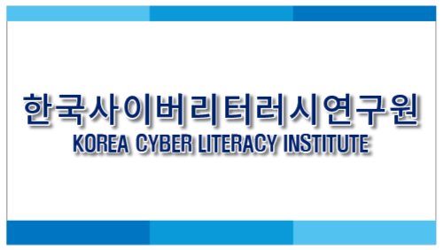
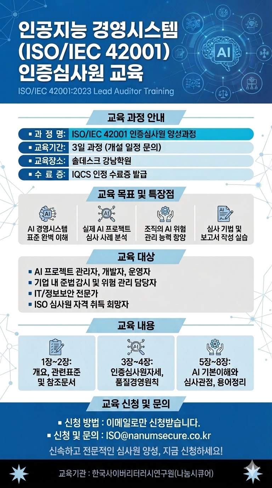

표준과 기술을 정확하게
용어와 요구사항을 맥락 속에서 읽고, 새로운 기술의 가능성과 한계를 함께 살핍니다.
Korea Cyber Literacy Institute
품질·환경부터 정보보안, AI, 지속가능발전까지. 관심 분야의 ISO 심사원 교육과 IQCS 등록 절차를 확인하세요.
국제표준의 언어를
현장의 실행 역량으로
전환합니다.
About KCLI
한국사이버리터러시연구원은 ISO 교육·심사, AI·사이버 리터러시, 플랫폼·지식정보를 주요 영역으로 삼고 있습니다. 표준과 기술을 이해하는 데서 나아가, 조직의 업무에 적용할 수 있는 판단력과 전문성을 지향합니다.
용어와 요구사항을 맥락 속에서 읽고, 새로운 기술의 가능성과 한계를 함께 살핍니다.
정보의 출처와 AI 결과를 점검하고, 위험과 책임을 고려해 활용 여부를 판단합니다.
사례와 실습을 통해 배운 내용을 정리하고, 현장에서 적용할 기준을 구체화합니다.

한국사이버리터러시연구원(KCLI)은 교육·시험 운영과 지식정보 제공의 전문성과 신뢰성을 높이기 위해 다음 원칙을 적용합니다.
KCLI는 교육·시험에 참여할 기회를 공평하게 제공하고, 평가와 업무상 판단의 독립성과 객관성을 지킵니다.
Core Business
전문가 양성과 조직의 표준 대응, 디지털 지식의 실제 적용을 하나의 역량 체계로 연결합니다.
품질·환경·비즈니스 연속성·정보보안·개인정보보호·AI·지속가능발전목표 분야의 ISO 심사원 교육을 제공합니다. 교육과정 보기
EDUCATION & AUDITAI 경영시스템의 요구사항과 위험관리, 거버넌스를 이해하고 책임 있게 적용하도록 돕습니다.
AI GOVERNANCE지식산업센터 관리 소프트웨어와 지식기반 정보 공유·아카데미 사업을 추진합니다.
PLATFORM & KNOWLEDGEProfessional Education
KCLI에서 교육할 수 있는 7개 규격입니다. 관심 규격을 선택해 적용 판, 개설 일정, 교육비와 참여 조건을 문의할 수 있습니다.
고객 요구사항을 충족하기 위한 프로세스 관리, 성과 평가와 지속적 개선을 다룹니다.
환경 측면과 영향을 파악하고 준수 의무와 환경성과를 관리하는 방법을 다룹니다.
업무 중단에 대비해 사업 영향 분석, 연속성 계획과 복구 대응을 살펴봅니다.
정보보안 위험을 평가하고 적절한 보안 통제를 선정·운영하는 방법을 다룹니다.
개인정보 처리의 위험, 처리 조직의 책임과 개인정보 보호 통제를 살펴봅니다.
AI 시스템의 위험과 영향을 평가하고, 책임 있는 AI 운영을 뒷받침하는 관리 체계를 다룹니다.
조직의 활동에 지속가능발전목표를 반영하고 목표와 실행 성과를 관리하는 방법을 다룹니다.
심사원 등록 요건과 수수료는 IQCS 심사원 등록 안내에서 확인할 수 있습니다.

ISO/IEC 42001:2023 LEAD AUDITOR TRAINING
표준 요구사항을 체계적으로 해설하고, 사례 기반 워크숍과 필기평가를 통해 현장 적용력을 높입니다.
포스터는 지난 과정의 안내 자료입니다. 다음 교육 일정, 교육비와 접수 여부는 문의해 주세요.
일정·교육비 문의 →ISO/IEC 42001의 목적과 구조, 연계 표준 및 핵심 참조체계를 이해합니다.
01인증심사 프로세스와 판정 포인트, 심사 수행의 기본 원칙을 학습합니다.
02AI 시스템의 특성과 위험을 심사 관점으로 분석하고 보고서 작성까지 실습합니다.
03KCLI는 교육과정을 안내하고 IQCS는 심사원 자격 심사와 등록을 진행합니다. 신청하려는 규격과 등급의 요건을 먼저 확인하세요.
최초 심사원보 등록에는 등록신청서와 교육합격증이 필요합니다. 심사원·선임심사원은 등급과 신청 방식에 따라 심사 이력, 직무기술서, 학력 증빙이나 검증심사 자료를 준비합니다.
심사 이력으로 신청하는 QB 방식과 검증심사를 받는 VB 방식의 요건은 IQCS에서 확인할 수 있습니다.
IQCS 등록 요건·제출서류 확인아래는 IQCS에 납부하는 심사원 등록 비용입니다. KCLI 과정별 교육비는 교육 문의에서 확인할 수 있습니다.
| 등급 | 신청비 | 연회비 |
|---|---|---|
| 내부 심사원 | — | 50,000원 |
| 심사원보 | — | 50,000원 |
| 심사원 | 100,000원 | 100,000원 |
| 선임심사원 | 100,000원 | 120,000원 |
| 검증심사원 | — | 170,000원 |
‘—’는 IQCS 요금표에서 금액이 표시되지 않은 항목입니다.
심사원보 비용의 납부기간 내 심사원으로 등록하면 해당 비용을 전액 차감합니다. 심사원 등록 관리기관을 변경할 때는 첫해 연회비에 30% 할인이 적용됩니다.
IQCS 공식 요금표에서 최신 비용 확인Work with KCLI
교육이나 협력을 검토하신다면 대상, 업무 현안, 기대 결과를 알려주세요. 아래 순서로 요청 범위를 정리하여 상담하실 수 있습니다.
참여 대상과 현재의 고민, 교육·협력이 필요한 이유를 정리합니다.
대상 · 업무 현안관련 표준과 주제, 필요한 수준, 진행 가능한 방식을 확인합니다.
주제 · 난이도 · 방식교육 내용과 사례, 일정, 기대하는 결과물을 협의합니다.
내용 · 일정 · 결과물학습한 내용을 실제 업무에 연결할 방법과 추가 과제를 살핍니다.
적용 기준 · 다음 과제Training Records
2024년부터 2026년까지의 KCLI ISO 교육이력과 ISO/IEC 42001 교육과정의 운영 성과를 확인할 수 있습니다.
교육일 기준 최신순으로 정리했습니다. 운영인원은 각 과정의 운영결과에 기재된 인원입니다.
| 교육과정명 | 교육일 | 일정 | 운영인원 |
|---|---|---|---|
| ISO 42001 선임 심사원 양성과정 | ~ | 주말 | 30명 |
| ISO/IEC 27001 내부 심사원 양성과정 | 평일 | 5명 | |
| ISO/IEC 27701 선임 심사원 양성과정 | ~ | 주말 | 3명 |
| ISO/IEC 27001 선임 심사원 양성과정 | ~ | 주말 | 3명 |
| ISO 22301 선임 심사원 양성과정 | ~ | 주말 | 4명 |
| ISO 19011:2018 선임 심사원 양성과정 | ~ | 주말 | 9명 |
| ISO 14001 선임 심사원 양성과정 | ~ | 주말 | 8명 |
| ISO 45001 선임 심사원 양성과정 | ~ | 주말 | 6명 |
| ISO 9001 선임 심사원 양성과정 | ~ | 주말 | 6명 |
| 총 9회 · 운영인원 합계 (연인원) | 74명 | ||
작은 화면에서는 표를 좌우로 밀어 전체 내용을 확인할 수 있습니다.
※ 연인원은 과정별 운영인원의 합계로, 동일인의 여러 과정 참여가 포함될 수 있습니다.
About IQCS
IQCS(International Qualification Certification Service)는 연수기관 지정·사후평가, ISO 심사원 등록관리, 국제자격 운영을 통해 산업 현장에 필요한 전문인력의 역량을 지원합니다.
INTERNATIONAL QUALIFICATION
CERTIFICATION SERVICE
교육부터 자격 등록과 사후관리까지, 국제표준 전문인력의 성장 경로를 잇는 자격 인증 전문기관입니다.
IQCS 공식 홈페이지 ↗경영시스템 심사원 양성 연수기관을 지정하고 교육과정 운영의 적합성을 사후 평가합니다.
자격과 적격성을 갖춘 심사자원을 등록하고 지속적인 사후관리로 전문성 향상을 지원합니다. 등록 절차·비용 보기
ISO/IEC 17024 기반으로 산업·서비스 현장에 필요한 개인자격을 설계하고 운영합니다.
LEAD AUDITOR STANDARDS
제공된 과정 자료에는 품질·환경·안전·정보보안·준법 등 25개 ISO 심사원 규격이 안내되어 있습니다.
※ IQCS 소개 내용은 제공된 회사·교육자료와 IQCS 공식 홈페이지를 바탕으로 간략히 정리했습니다.
KCLI × IQCS
제공된 IQCS 지정서에는 한국사이버리터러시연구원이 ISO 9001·14001·45001·27001·27701·22301·42001 및 ESG Auditor 교육·시험 수행기관으로 기재되어 있습니다.
ISO 교육·심사 전문역량, AI·사이버 리터러시, 플랫폼·지식정보를 주요 영역으로 합니다. 국제표준과 디지털 기술의 이해를 실제 업무 역량으로 연결하는 것을 지향합니다.
ISO 9001, ISO 14001, ISO 22301, ISO/IEC 27001, ISO/IEC 27701, ISO/IEC 42001, ISO/UNDP 53001 교육을 문의할 수 있습니다. 7개 규격의 교육과정 보기
교육은 KCLI에서, 심사원 자격 심사와 등록은 IQCS에서 진행합니다. 등록에 필요한 경력, 심사 경험과 제출서류는 IQCS 심사원 등록 안내에서 확인하세요.
개설 일정, 교육비, 접수 여부, 교육 장소와 방식은 희망 규격을 선택해 KCLI에 문의해 주세요. IQCS 심사원 등록 수수료는 등록 비용 안내에서 확인할 수 있습니다.
가능합니다. 희망 주제, 참여 대상·인원, 일정과 해결하고 싶은 업무 과제를 보내주시면 제공 가능 범위와 진행 조건을 협의할 수 있습니다.
이 홈페이지는 교육 안내와 상담 연결을 제공합니다. 이메일 작성이나 전화 연결만으로 신청·접수가 완료되지는 않으며, 담당자의 안내를 통해 확정해 주세요.
Connect with KCLI
메일 앱에서 내용을 확인한 후 직접 보내주세요. 현재 화면에서는 문의가 전송되지 않습니다.
서울특별시 금천구 디지털로 178, 가산 퍼블릭 A동 1031호